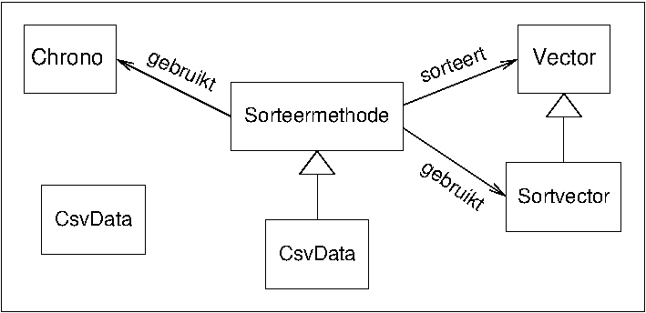

labo02
Les 4, 7-8 maart 2018
In de komende lessen gaan we de snelheid van een aantal sorteeralgoritmes vergelijken.
.
Voor we beginnen: documentatie is erg belangrijk: ze helpt je je weg te vinden in code. Hierboven vind je een UML-diagram. Commentaar in de code is geschreven voor Doxygen. Doxygen is een documentatiegenerator. Deze bekijkt alle commentaar in de code en maakt gebruik van de speciale opdrachten (\brief, \fn, ...) om deze in (bijvoorbeeld) .html te reorganiseren. Erg handig, vooral bij grotere projecten. Eigenlijk hadden we, om het belang van goede documentatie aan te tonen, eerst de opdracht willen geven zonder die hulp, maar dat hebben we maar zo gelaten. Probeer je toch maar in te denken hoeveel moeilijker het zou geweest zijn zonder de commentaren en de onderstaande uitleg.
Sorteeralgoritme
Elk sorteeralgoritme implementeren we als een klasse die overerft van de abstracte klasse Sorteermethode, en die daarvan de functie-operator() implementeert. (Een object van
zo'n klasse noemen we een functor.) Deze operator zal één parameter
nemen, nl. een STL-vector. Deze vector wordt door de operator
() gesorteerd volgens het geïmplementeerde
algoritme.Al die klassen (eentje voor elke sorteermethode) erven dus van de abstracte klasse
Sorteermethode, die naast de
functie-operator () ook een methode meet(...)
bevat. Om verschillende soorten gegevens in de te sorteren vector
toe te laten, zijn de klassen geparametriseerd.
Sorteerbare vectoren
Om sorteermethodes te kunnen vergelijken, moet je ook onderscheid maken wat betreft de gegevens die je sorteert. Sorteer je veel of weinig gegevens? Sorteer je ongeordende, (bijna) geordende, omgekeerd geordende gegevens? Sorteer je kleine (int)
of grote (Telefoonboek) gegevens? Sorteermethodes die
over het algemeen snel werken, kunnen onder bepaalde omstandigheden
immers heel traag uitvallen. Dat zou je moeten terugvinden in de
meetresultaten.
Daarom implementeren we de klasse Sortvector<T>, die een aantal
methodes bevat die specifiek voor het onderzoeken van
sorteermethodes relevant zijn. Hett is een geparametriseerde
klasse, zodat we kunnen variëren in de soort gegevens die we willen
sorteren. Ze heeft een aantal eigenschappen die een gewone vector
niet heeft. Zo kan je ze instantiëren met een vooropgegeven aantal
verschillende elementen in random volgorde. Dat werkt alleen als je
een klasse van objecten gebruikt die je kan een waarde geven op
basis van een int. Wil je bijvoorbeeld Parkieten sorteren,
dan kan dat alleen als
Parkiet deParkiet(23);
deParkiet=33;
zinvolle code is.
Meetresultaten
Tenslotte willen we tijden opmeten. Daarvoor heb je al de klasseChrono. Het is echter weinig
interessant om absolute cijfers te kennen -- dus gaan we voor een
tabel van verschillende meetresultaten die we kunnen vergelijken.
- Willen we bevestigd zien dat een methode
O(
n2) of O(logn) is, dan laten wen(= lengte van de vector) variëren tussen twee grenzen (kortsteenlangste, metni+1 = 10*ni). - Opsplitsen naargelang de begintoestand van de vectoren (random, gesorteerd, omgekeerd gesorteerd, veel dubbels,...) is ook interessant.
Opdracht 1
Implementeer de klasseSortvector<T>.
Merk op: indien je de code uittest voor
Sortvector<int> zouden er geen problemen mogen
zijn. Test je uit voor Sortvector<double>, dan
zou dit wel het geval kunnen zijn. Is dat zo, en waar ligt dit aan?
Los op indien nodig. Wil je eens een andere klasse proberen moet ze
een constructor hebben die een int als argument heeft. Een
voorbeeld daarvan vind je in intstring.h.
Tip Om een random permutatie van elementen te
genereren (zie shuffle), is de methode van Knuth /
Fisher-Yates / Durstenfeld de standaard. Deze methode (zoek op!)
vraagt dat je uit n getallen er random ééntje kiest.
Misschien wil je de standaardrandomgenerator uit de
cstdlib-bibliotheek gebruiken. Die is niet echt goed,
maar goed genoeg voor wat e hier doen. Het gebruik hiervan:
helemaal in het begin van je main-functie initialiseer
je de generator met het commando srand(time(0))
(waarbij time() te vinden is in de
ctime-bib). Een willekeurig geheel getal krijg je door
de oproep rand(); Als je een getal tussen 0 en 100 wil
(100 niet inbegrepen), dan neem je rand() % 100 .
C++ beschikt over nieuwe klassen voor randomgeneratoren, die bovendien veel extra mogelijkheden bieden. Je kan hier je weg in zoeken, maar pas als je klaar bent met de rest van de opdrachten. Merk je met die betere generatoren een verschil in je resultaten?
Opdracht 2
Implementeer insertion sort. Hoe groot mag een int-tabel zijn zonder dat het echt lang (meer dan een minuut) duurt om ze te sorteren? Maak ook eens een grafiekje in Excel. Eventueel zorg je voor puntkomma's tussen de gegevens (CSV-formaat).CSV-bestanden Een hulpklasse voor het maken van csv-bestanden is te vinden in csv.h. Let op: de defaultwaarde van het gebruikte scheidingsteken is `.'. Dit is niet geschikt voor rekenbladprogramma's met een niet-Engelstalige instelling, waarbij vlottendekommagetallen worden voorgesteld met een vlottende komma. Hoe je een .csv-bestand produceert waar het punt vervangen is door een vlottende komma, vind je in de API van de klasse CsvData:
De klasse CsvData wordt gedefinieerd in de header csv.h. Elk object van de klasse komt overeen met één .csv-bestand, waarin getalwaarden worden opgeslagen. Vermits de meeste rekenbladen grafieken kunnen opmaken met verschillende gegevensreeksen, waarbij elke gegevensreeks standaard opgeslagen is in een kolom, slaat elke CsvData gegevens ook op deze manier op. De API is de volgende
| CsvData(const std::string& _bestandsnaam, char _scheidingsteken='.') |
| Creëert een CsvDataobject. De parameter _scheidingsteken duidt aan welk teken geheel en fractioneel deel scheidt in een vlottendekommagetal. Defaultwaarde is '.', voor niet-Engelse rekenbladen dient ',' opgegeven te worden. |
| template class<class T> voegDataToe(const std::vector<T>& nieuwedata) |
| Voegt een kolom met numerieke waarden toe. T kan een willekeurig type zijn dat met static_cast<double> kan worden omgezet naar double. |
Opdracht 2
Voor Shellsort met de incrementen van Sedgewick ga je uiteraard niet elke keer je een vector wil sorteren die incrementen opnieuw uitrekenen. Je steekt ze gewoon in een vaste tabel. Schrijf een programma dat de programmalijnint Sedgewickinc[]={ 1,5, ....};
uitschrijft, maar dan natuurlijk met alle nodige incrementen ingevuld. Zorg ervoor dat de berekeningen efficiënt zijn, al maakt dat in de praktijk natuurlijk niet veel verschil: geen overbodige berekeningen dus. Let er ook op dat je geen vlottendekommagetallen gebruikt. Die zijn traag en leiden misschien tot afrondingsfouten.
opdracht 3
Is de Sedgewickreeks eigenlijk echt beter dan de Shellreeks⌊n/2⌋…ki-1= ⌊ki/2⌋…k0=1?
Implementeer een klasse ShellShellsort. Doe dit netjes: duplicaatcode is niet toegestaan. Maak een ontwerp (welke klassen, welke overerving, welke code waar). Laat een begeleider dit nakijken voor je begin te programmeren.
opdracht 3
Maak een vergelijking. Implementeer een static lidfunctie vergelijk van de klasse Sorteermethode die verschillende Sorteermethodes accepteert, waarbij je kan opgeven of de vergelijking moet gebeuren op random, stijgend of dalend geordende vectoren, en, zoals meet, een range van tabelgroottes. De output moet naar een .csv-bestand gaan dat voor elke sorteermethode een rij bevat met de tijden voor de verschillende groottes. Doe dit netjes: hoe geef je de informatie aan de functie? Enkele stappen en hints:- De vergelijkfunctie moet een onbepaald aantal (twee of meer) Sorteermethodes kunnen vergelijken. Vanaf C++11 zijn er variadische functies die een onbepaald aantal argumenten kunnen aannemen. Ook vroeger bestond er al zo'm mechanisme, de var_args-lijst van C. Wie dit wil kan deze mechanismen gebruiken, maar het is eenvoudiger om gewoon als argument een vector op te geven.
- Keuzes implementeren doe je met enum. Je definieert een enum-type met de mogelijke waarden (in dit geval voor random, stijgend en dalend) en geeft de functie een parameter van dat type. Op die manier kan je de functie alleen oproepen met een geldige keuze. De enum-lijst geeft ook de gebruiker info over welke keuzes geldig zijn.
- Vergelijk nu de verschillende sorteermethodes die je geïmplementeerd hebt en vergelijk ze ook met std::sort(....).